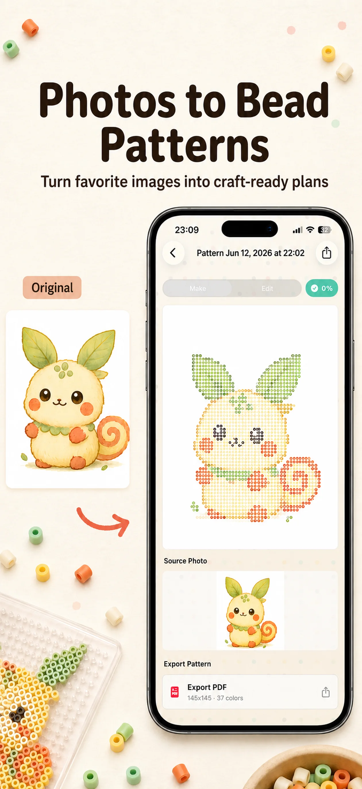

Details disappear in a small grid
Choose a dedicated path for photos and illustrations or for pixel art and logos, so the conversion fits the source image.
From a photo to a pattern you can build
Import a photo or illustration, then choose your board size and color limit. BeadCraft creates a pattern mapped to real bead colors, lists the codes and quantities, and tracks your progress while you build.
Official website · App Store ID 6779639958 · Version 1.5.1 · App Store seller: Xuemei Huang (雪梅 黄)

Where pattern projects usually stall
Finishing with physical beads also means choosing a size that keeps the subject recognizable, matching colors you can buy, counting materials, and keeping your place.
Choose a dedicated path for photos and illustrations or for pixel art and logos, so the conversion fits the source image.
See real color codes and usage counts for Perler, Hama, Nabbi Nano, and Artkal palettes.
Move through boards and colors, mark placed cells, and resume with remaining counts and overall progress intact.
Three steps
Pick Photo / Illustration or Pixel Art / Logo, then crop around the subject you want to preserve.
Balance recognizable detail against the number of beads and colors you are ready to use.
Check every code and count, then follow Making Mode or export the printable PDF.
Current app screens
Problem-led guides
Choose a grid and color limit that keeps the subject recognizable without making the project unmanageable.
Read the guide →Match your bead brand and spot material shortages before you start placing beads.
Read the guide →Track boards, colors, remaining counts, and progress without losing your place.
Read the guide →No account or developer-operated photo storage server is required. Saved patterns and projects remain in the app's local storage.
Download free. Larger boards, PDF export, expanded project storage, and other Pro features are available through an optional one-time purchase.